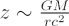
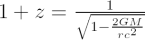

Einstein’s theory of general relativity predicts that the wavelength of electromagnetic radiation will lengthen as it climbs out of a gravitational well. Photons must expend energy to escape, but at the same time must always travel at the speed of light, so this energy must be lost through a change of frequency rather than a change in speed. If the energy of the photon decreases, the frequency also decreases. This corresponds to an increase in the wavelength of the photon, or a shift to the red end of the electromagnetic spectrum – hence the name: gravitational redshift. This effect was confirmed in laboratory experiments conducted in the 1960s.
The converse is also true. The observed wavelength of a photon falling into a gravitational well will be shortened, or gravitationally ‘blueshifted’, as it gains energy.
As an example, take the white dwarf star Sirius B, with a gravitational field ~100,000 times as strong as the Earth’s. Although it sounds extreme, this is still considered a relatively weak field, and the gravitational redshift can be approximated by:

where z is the gravitational redshift, G is Newton’s gravitational constant, M is the mass of the object, r is the photon’s starting distance from M, and c is the speed of light. In this case, the gravitational redshift suffered by a photon emitted from the star’s surface is a tiny 3 × 10-4. In other words, wavelengths are shifted by less than one part in 30,000.
For radiation emitted in a strong gravitational field, such as from the surface of a neutron star or close to the event horizon of a black hole, the gravitational redshift can be very large and is given by:
